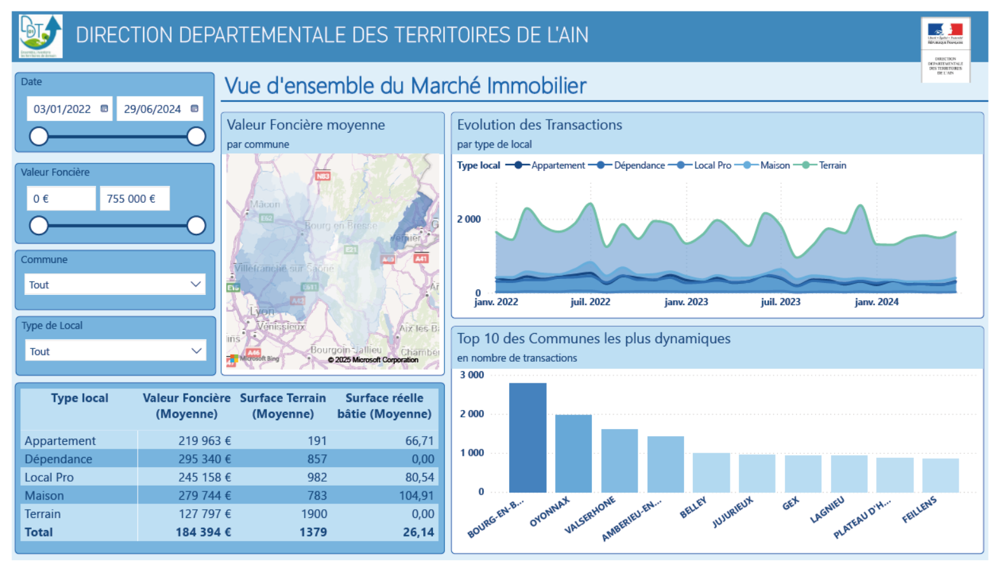

Mes Projets Data
Analyse des Prix du Vin aux États-Unis
Ce projet explore l'évolution des prix des vins du Domaine des Croix sur le marché américain et met en lumière les tendances tarifaires par millésime et cuvée, en exploitant nettoyage de données, visualisation et analyse exploratoire.
Voir le projetLe 23ème Ecran
Projet complet utilisant Machine Learning 🤖, Data Visualisation 📊 et interface web 🌐 pour créer un système intelligent de recommandation de films pour un Cinéma.
Voir le projetMarket Price Retail

Analyse des données retail pour optimiser coûts, profits et stratégie, avec livrables EDA, PowerPoint et tableau de bord Power BI.
Voir le projetObservatoire du Marché Immobilier
Analyse du marché immobilier de l’Ain via un tableau de bord interactif pour guider les décisions des collectivités et professionnels.
Voir le projetAnalyse des métiers Data
Exploration des métiers de la data dans le monde pour fournir des recommandations sur l’emplacement d’un nouveau bureau pour un cabinet spécialisé.
Voir le projetProjet CampusCARE
Analyse des facteurs de dépression chez les étudiants en Inde pour développer des outils de suivi, des stratégies d’intervention précoce et un tableau de bord interactif.
Voir le projet